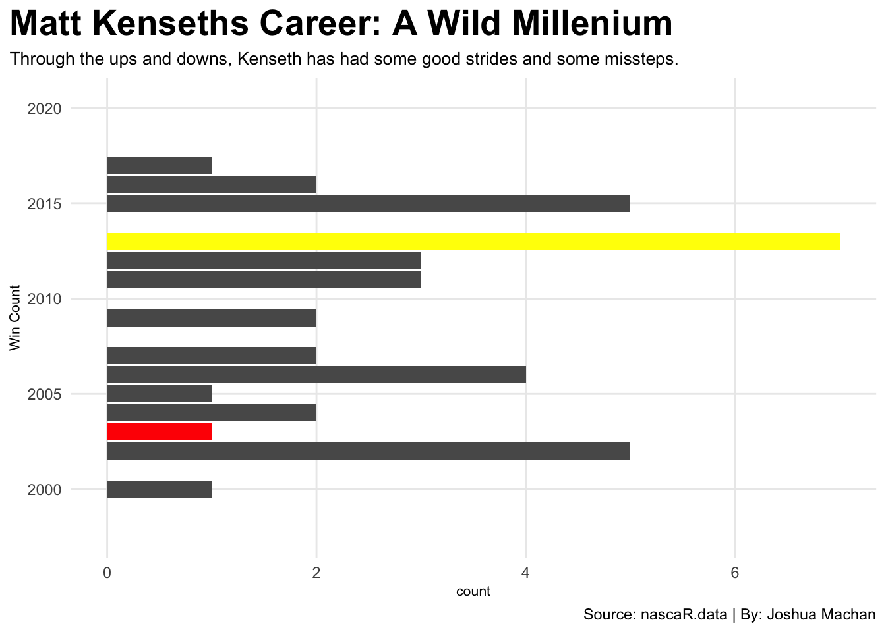
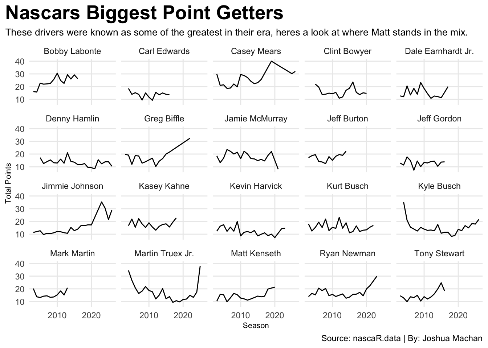

NASCAR, a sport overshadowed by literally everything, every molecule, everyone and their mother that you can possibly think of. As much as I have been a fan of NASCAR and many drivers apart from it, It’s a very love-hate relationship, From bad organizational management to main streaming gimmicks that ruin the competition, sponsors that shuffle around like a deck of cards, and all of it leading to dozens and dozens and dozens of empty seats week after week, it’s a hard time to be a fan of the sport. It’s even overshadowed by F1 nowadays, a global organization that has a better market value to appeal to people in America than the race organization that was supposed to appeal to Americans. Do you expect me to convince a bunch of 20 year olds that turning left for 4 hours is exciting? No, but I shall try to make it seem less boring than most people say it to be. Now, If you asked me this question about 30 years ago, I’d say I can sell you this as if I were a girl scout selling cookies. Hell, there was once a time where their viewership was almost on par with the NFL. But what happened? How did this sport go from the thing that everyone was talking about to the thing the weird kid in the back of the bus likes? (I am that weird kid) Well lets time travel back to the great age of 2003, the moment where one of the most controversial championship seasons occurred, and it came from the most unlikely of drivers…
Code
library(tidyverse)library(nascaR.data)library(gt)cup <-load_series("cup")Mk <-get_driver_info("Matt Kenseth", type ="season")MattKseason <- cup |>filter(Season ==2003) |>group_by(Driver) |>summarise(total_Pts=sum(Pts),total_Wins=sum(Win)) |>arrange(desc(total_Pts)) MattKseason |>filter(total_Pts >3000) |>gt() |>cols_label(total_Pts="Points", total_Wins="Race Win") |>tab_header(title ="How Matt Kenseths 2003 Championship season changed Nascar",subtitle ="This season defined of how consistent top 10 finishes and a well running race car can create a winning season, but that begs the question, is staying consistent more important than winning the race?") |>tab_style(style =cell_text(color ="black", weight ="bold", align ="left"),locations =cells_title("title") ) |>tab_style(style =cell_text(color ="black", align ="left"),locations =cells_title("subtitle") ) |>tab_source_note(source_note =md("Source: nascaR.data | By: Joshua Machan") ) |>tab_style(locations =cells_column_labels(columns =everything()),style =list(cell_borders(sides ="bottom", weight =px(3)),cell_text(weight ="bold", size=12) ) ) |>opt_row_striping() |>opt_table_lines("none") |>data_color(columns =vars(total_Pts),colors = scales::col_numeric(palette =c("white", "orange", "red"),domain =NULL) ) |>data_color(columns =vars(total_Wins),colors = scales::col_numeric(palette =c("white","green", "blue"),domain =NULL) )
How Matt Kenseths 2003 Championship season changed Nascar
This season defined of how consistent top 10 finishes and a well running race car can create a winning season, but that begs the question, is staying consistent more important than winning the race?
Driver
Points
Race Win
Matt Kenseth
5022
1
Jimmie Johnson
4932
3
Dale Earnhardt Jr.
4815
2
Jeff Gordon
4785
3
Kevin Harvick
4770
1
Ryan Newman
4711
8
Tony Stewart
4549
2
Bobby Labonte
4377
2
Bill Elliott
4303
1
Terry Labonte
4162
1
Kurt Busch
4150
4
Jeff Burton
4109
0
Jamie McMurray
3965
0
Rusty Wallace
3950
0
Michael Waltrip
3934
2
Robby Gordon
3856
2
Mark Martin
3769
0
Sterling Marlin
3745
0
Jeremy Mayfield
3736
0
Greg Biffle
3696
1
Ward Burton
3550
0
Elliott Sadler
3525
0
Ricky Rudd
3521
0
Johnny Benson Jr.
3448
0
Joe Nemechek
3426
1
Dale Jarrett
3358
1
Ricky Craven
3334
1
Dave Blaney
3194
0
Jimmy Spencer
3147
0
Kenny Wallace
3061
0
Source: nascaR.data | By: Joshua Machan
The name at the very top of the list may not be one you can easily think of when you think of NASCAR. Not Dale Earnhardt, not Jeff Gordon, but a guy from Cambrdige, Wisconsin named Matt Kenseth. In just his 6th year at the highest level of NASCAR, he won the season championship. Now can you tell me what the issue is with this graph? Anyone? That’s right, there’s only one win. It was the third race of the season and didn’t win a race until the very next year in Rockingham, North Carolina. He’s the only driver to win the championship with one win in the modern era of NASCAR, and the fourth driver to do so in the sports history. While Kenseth did have a single win, his biggest factor of staying on top was his consistency, finishing in the top 10 a total of 25 times out of 36 races. If anyone has a calculator on them, that’s 69% of the 2003 season. Now another thing that’s out of place is the driver who finished in 5th that season, Ryan Newman, another driver who has had a great but interesting career. Don’t you all find it odd that the driver with the most wins of 8, finished in 5th? If I were Ryan, I’d be pissed. Here’s a bigger question though, was this just a one and done season or was Matt actually better than his championship season?
Code
MattBG <-Mk |>filter(Series =="Cup") |>group_by(Season) |>summarise(total_Avg_Finish =sum(`Avg Finish`),total_Wins=sum(Wins)) |>arrange(desc(total_Wins)) SEVENWIN <- MattBG |>filter(Season ==2013) CHAMPION <- MattBG |>filter(Season ==2003)ggplot() +geom_bar(data=MattBG, aes(x=Season, weight= total_Wins)) +geom_bar(data=SEVENWIN, aes(x=Season, weight= total_Wins),fill="yellow") +geom_bar(data=CHAMPION, aes(x=Season, weight= total_Wins),fill="red") +coord_flip() +labs(x="Win Count", title="Matt Kenseths Career: A Wild Millenium", subtitle="Through the ups and downs, Kenseth has had some good strides and some missteps.", caption="Source: nascaR.data | By: Joshua Machan" ) +theme_minimal() +theme(plot.title =element_text(size =20, face ="bold"),axis.title =element_text(size =8), plot.subtitle =element_text(size=10), panel.grid.minor =element_blank(),plot.title.position ="plot" )

Now after that 2003 Season, NASCAR thought “Well we can’t let something like this happen again, We want a champion with wins and consistency, not just consistency” Thus the Matt Kenseth Rule was officially adopted the next year, creating the Chase for the Cup. Looking at Matt’s Career, he had a very up and down career, and yet 2003 wasn’t even his best season. That Yellow line was his first year with his new ride at Joe Gibbs Racing, Yes Coach Joe Gibbs from the washington redskins, that Joe Gibbs. Kenseth went on to win 7 wins and finished second in points for the championship behind Jimmie Johnson. A total of 19 points was spread between the two of them under the modified chase for the cup.
Now lets talk about the Chase, on paper this seems like a good way to determine a champion for the season, but there is one main flaw that debunks the system, that being the unpredictable nature of the sport. Pole leaders change each race, every pit stop matters, debris can come out of nowhere and destroy a car’s chance of winning, and on track rivalries can happen. If there’s one thing that could ruin a championship run, it’s revenge when you least expect it.
Just two years later after his second place finish for the cup, Kenseth gets spun out by Joey Logano in Kansas and dashes his hopes for the championship as he would be eliminated the following week at Talladega after Joey wins his sixth race that season. The next week in Martinsville, he intentionally wrecks him and does the exact same thing that Logano did to him just two weeks prior. One thing you need to know about Matt Kenseth is that he is considered one of the nicest guys in the garage and he’s the least likely to get a temper on the track, so it was very uncharacteristic of him to do this. But when it comes to a guy like Joey Logano, who is by far one of the most controversial drivers in the sports history, I personally don’t blame him. This moment in Martinsville is regarded as one of the most infamous moments in recent memory, and is a perfect example of how the playoff system isn’t so picture perfect. Matt Kenseth’s Teammate Denny Hamlin said after the crash occurred “I just can’t get over what this series has come to. Just how f****** up it is. How do you really crown a real champion now? It’s just the wild, wild west.” This moment became so infamous that NASCAR had to add more to the Matt Kenseth rule. So yeah the Chase is a mixed bag to say the least. Yet with how the points are distributed after multiple playoff and race format changes. Do you think that changes would affect Kenseth and the best drivers?
Code
top20 <- cup |>filter(Season >=2003) |>group_by(Driver) |>summarize(TotalPoints =sum(Pts, na.rm=TRUE) ) |>ungroup() |>top_n(20, wt=TotalPoints)FinLinechart <- cup |>filter(Season >=2003) |>filter(Driver %in% top20$Driver) |>group_by(Season, Driver) |>summarise(total_Avg_Finish =mean(Finish),total_Wins=sum(Win)) |>arrange(desc(total_Avg_Finish)) ggplot() +geom_line(data=FinLinechart, aes(x=Season, y=total_Avg_Finish, group=Driver)) +facet_wrap(~Driver) +labs(y="Total Points", title="Nascars Biggest Point Getters", subtitle="These drivers were known as some of the greatest in their era, heres a look at where Matt stands in the mix.", caption="Source: nascaR.data | By: Joshua Machan" ) +theme_minimal() +theme(plot.title =element_text(size =20, face ="bold"),axis.title =element_text(size =8), plot.subtitle =element_text(size=10), panel.grid.minor =element_blank(),plot.title.position ="plot" )

Some of these drivers retired in the mid 2000s and 2010s hence why some of them are often shorter lines than others. You have your best modern drivers like Kyle Busch, Jimmie Johnson, and Martin Truex Jr. just to name a few, and our good ole chaos maker Kenseth sits around 18th within the 20 best point getters in the modern era of NASCAR. With that Matt Kenseth Rule changing the format of how to crown a champion, this awoke something in NASCAR to try to mainstream the sport even more. Well if you know the old saying, if it aint broke then bash with a crow bar and scatter the remains. What do I mean by this? Over the last couple of years, NASCAR has been changing the way they distribute points, and are currently still doing, ugh Stage Points. Ever wanted to see segmented racing in the actual race? me neither it sounds like it will make the playoff picture even worse than when Kenseth won it by just being consistent. I understand their thought process behind this because they wanted to limit the amount of just boredom of watching them go around, but at the same time it leads to massive inconsistency within the top drivers because now it’s essentially bonus points for where they finish one third or two thirds the way into a race. Ok, I’m off my soap box about the stage points.
So where does NASCAR go into the new age? Personally I feel like meddling from the top needs to stop as soon as possible, but at the same time drivers that change up the status quo make it seem more interesting and less robotic if that makes sense. Matt Kenseth always struck me as such an interesting driver. He didn’t have a brash racing style or outspoken personality, but rather he did what nobody else did in NASCAR. He became so consistent that he literally rewrote the game itself. In a sport (YES A SPORT) like NASCAR, It’s about timing, power and the ability to outlast your opponents in the fastest environment in the world, but not many men has done it like Matt Kenseth. So the next time if you’re flipping through channels, and happen to land at cars turning left, take some time to appreciate the art, the intricacies, the craziness, and the sport of NASCAR.